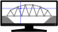

Bridge Designer, Cloud Edition
About Bridge Designer
Bridge Designer, Cloud Edition is a free web application for learning about engineering design. The user solves
the problem of designing and testing a highway bridge across a river. The test involves driving a standard truck
load over the bridge to ensure it's strong enough. But that's not all! The most successful bridge is the
one with lowest cost. The Bridge Designer continuously shows the cost of the current design, based on the amount
of preparation required at the bridge site, the design's complexity, and the kind and amount of materials used.
Iterate to see how low you can get the cost of your bridge! Compete to see whose is best!
Contributing
Bug reports! If you're using Bridge Designer and it does something unexpected or
annoying, please
report an issue, and add a
bug label.
Feature requests! If you have an idea that you think many users of Bridge Designer would
find useful, please
report an issue, and add an
enhancement
label.
Questions. If you have a question about Bridge Designer, please
report an issue, and add a
question
label.
Back end resources. We could furnish a service for contests that anyone can set up, with
scoreboards provided and updated automatically. But we don't have resources to run the back end. If you can
contribute, we want to hear from you. Please
report an issue, and add a
back end resource offer label.
Links
FAQ
-
Is anything new? Yes! New fly-through test visualization, 3d printing support, and
more. For details, see "What's new?" in the Help of Bridge Designer.
-
What's the catch? None! Use Bridge Designer, Cloud Edition freely as much as you like
for educational purposes only. The source is also freely available under the GNU public license, v3.
-
Is the Cloud Edition related to earlier apps The Bridge Designer, Engineering Encounters Bridge Designer, and
West Point Bridge Designer?
Yes! All the older versions were desktop applications for Windows and Mac. Many users have asked for a version
to run on Chromebook and other platforms with only a web browser. We answered with the Cloud Edition. It's
engineered to seem as similar as possible to the old versions so that teachers' experience and lesson plans
won't need much changing.